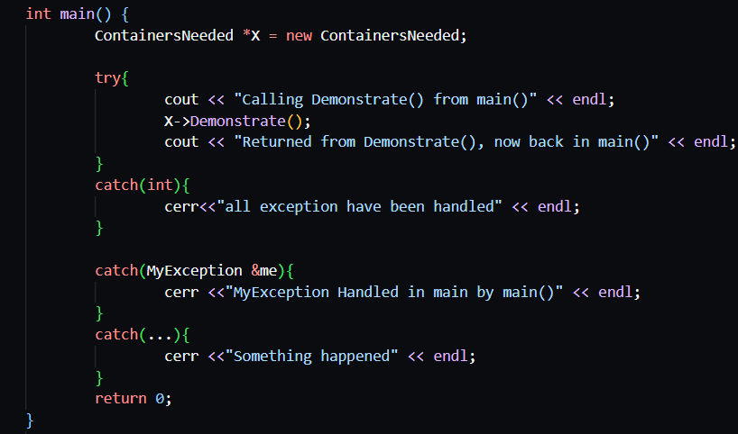

Exception Handling
December 11, 2022
Read Time: 5 mins 10 secs
Word Count: 1215

What is Exception Handling
Exception handling involves dealing with errors that occur while the program is executing. An exception is a signal generated when an abnormal event has occurred in a running program. It is used to manage situations which are outside the normal flow of program execution. Separates error-handling code from normal processing code. Exceptions alter the flow of execution in a program from normal processing to executing an exception. Exception handling allows errors to be trapped and an appropriate message displayed to the user informing that an error has occurred. Exception Handling uses exceptions to indicate or signal that an error has occurred. Exceptions are separate from the return values of methods. Exceptions can be logged so that the developer can use the log to debug the program at a later date. When an error occurs, an exception is produced. This is called raising or throwing the exception. The block of code where exceptions can be thrown is called the try block. The block of code to handle the exceptions generated is known as the catch handler (or catch block). The point in the code where the exception is generated is known as the throw point
The Benefits of Exception Handling
- Separates error handling code from regular code by handling the exception in a catch handler
- If possible, allows program to run normally after exception has occurred
- If this is not possible, allows a graceful shutdown of the program instead of an abrupt termination
- Sufficiently handle unexpected occurrences and errors the programmer might not anticipate
- Improves the robustness of the program
- Improves the reliability of the programme
- provides defensive programming capabilities
Exception Handling Models
Resumption model
In the resumption model of exception handling, statement execution resumes with the line following the one that raised the exception. This model is used in languages such as BASIC
Termination model
In the termination model of exception handling, the block of code containing the line that raised the exception is immediately terminated and control is passed to the exception handler in the method if one is present, otherwise the method immediately terminates. This model is used in C++ and Java programming languages
Checked vs Unchecked Exceptions
Unchecked Exceptions
These are exceptions that a program is not required to handle. The program will compile successfully even if no exception handler is present. All exceptions in C++ are unchecked, but only exceptions that inherit from RuntimeException in Java are unchecked.
Checked Exceptions
These are exceptions that a program must handle. The program will not compile if no exception handler is present or if the exception is not declared (so it can be propagated forward).●All exceptions that inherit from class Exception in Java are checked exceptions (apart from those that inherit from class RuntimeException). All checked exceptions in Java must be handled or declared.
Unhandled Exceptions
If an unchecked exception is raised or thrown but there is no catch handler for that exception. The exception is propagated upward until an appropriate catch handler is found or the program terminates. This process is called stack unwinding. However, if an appropriate catch handler is found then the exception is considered handled and stack unwinding stops. Example: If main() called A() and A() called B() and an unhandled exception is thrown in B(), B() will terminate and return to A(), If the exception is not handled in A(), A() will terminate and return to main() If the exception is still not handled in main(), main() too will terminate and the entire program will terminate abnormally
Exception Hierarchy
Both C++ and Java have exception hierarchies in which various exception classes are sub classes of some base exception or error class. Objects of the child class exceptions are also considered exceptions of their respective parent classes. For instance, you could code a catch handler to catch exception objects in C++ or Exception objects in Java, and this would catch all exceptions of the type of the parent as well as those of type of the child classes
Explicitly Throwing Exceptions
In C++, exceptions have to be explicitly thrown by the programmer in code. Java allows the programmer to explicitly throw exceptions, but it can also automatically throw some exceptions, for example, a division by zero at runtime causes Java to automatically throw an ArithmeticException. In Java only exception objects can be thrown, while in C++ any data type, value or object can be thrown In both languages, the keyword to throw an exception is throw.
Re-throwing Exceptions
Once an exception is processed by a catch block it is
considered as being handled.
What if the method containing the catch handler
wants to propagate the exception up through the call
stack? Re-throwing an exception allows a method to send a
just-handled exception up to a calling method to
indicate that the exception occurred.
For example, if main() calls A() and A() calls B(), and
B() handles an exception, it can rethrow that exception
so it A() too can handle it, and A() in turn can rethrow
it to main() for processing there. Re-throwing an exception is done inside the catch
block / catch handler
Keyword format for C++:
throw;
(note that in C++ the throw statement is by itself to
indicate a re-thrown exception).
Keyword format Java:
throw ex;
(where ex is the exception object caught)
Exception Specifiers/Declaration
State that a method can throw a specific exception or set of exceptions Exceptions that can be thrown are specified after the argument list but before the method body using the keywords throw in C++ or throws in Java C++: void method( ) throw (int, string) { }. Java: void method( ) throws SQLException, IOException { } C++ and Java differ on how exception specifiers are treated by the language compilers Become part of the signature of the method in C++ but not in Java
Java's Finally Block
Because both C++ and Java use the termination model
of exception handling it is possible that some code will
not get executed when an exception is thrown
For instance, a file or database may have been
opened or memory allocated, then the exception
occurs and is handled before the code to close the
file/database or release the memory was executed. This causes resource leaks
Java tries to correct this by providing a finally block
which always gets executed whether or not an
exception is thrown. (except when System.exit() is
used).
C++ does not have a corresponding finally block.
Note:
In C++ every try block must be
followed by at least one catch
block.
In Java the catch block is
optional if there is a finally
block.
Also in Java, the finally block is
optional if there is a catch block
however there must be one or
the other or else the Java
compiler will generate an error.
The finally block is helpful for more than simply managing exceptions; it enables the programmer to prevent having to write cleanup code from unintentionally being skipped by a return, continue, or break commands. Even when no exceptions are predicted, it is always a good idea to place cleaning code in a finally.
Problems with Exception Handling
- Exception handling can lead to surprisingly irregular execution of code
- Exception handling can hide underlying errors by trapping the exceptions thrown but not sufficiency distilling or handling the error that caused the exception
- Exception handling can cause resource leaks a resource is acquired and used by a method but an exception occurs before the resource is released
- The code might become cluttered and might be confusing for the programmer after a considerable amount of the fixing code is implemented